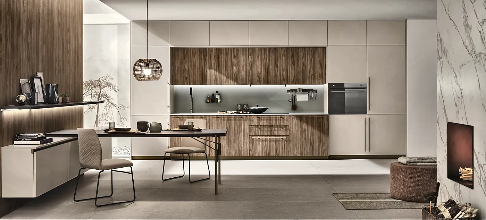
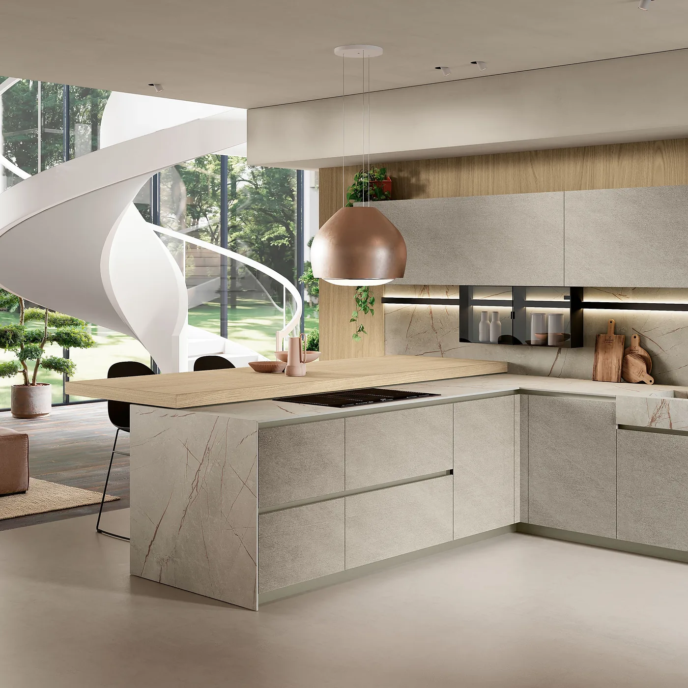
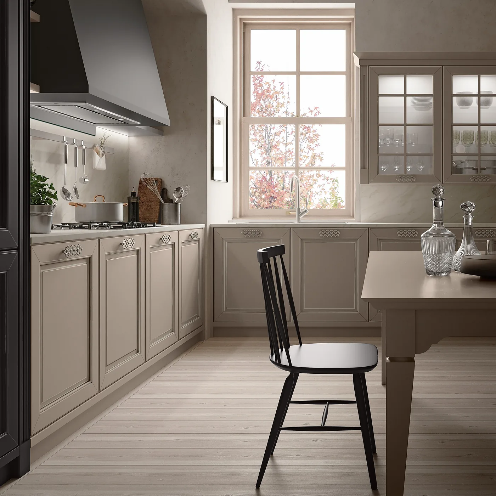
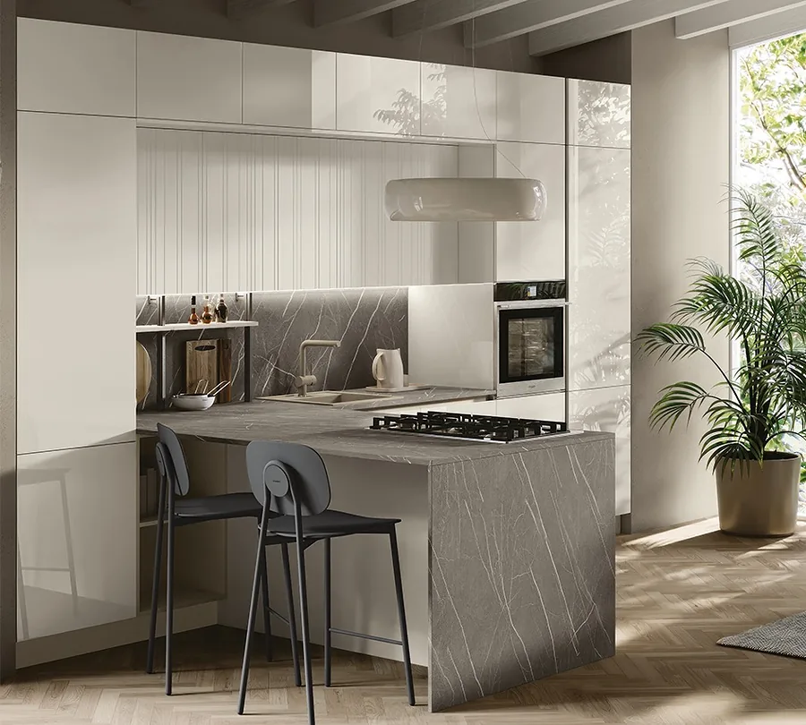
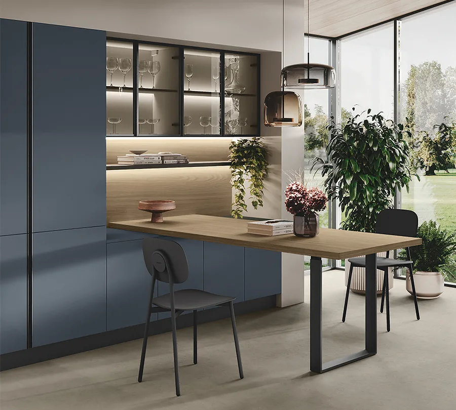
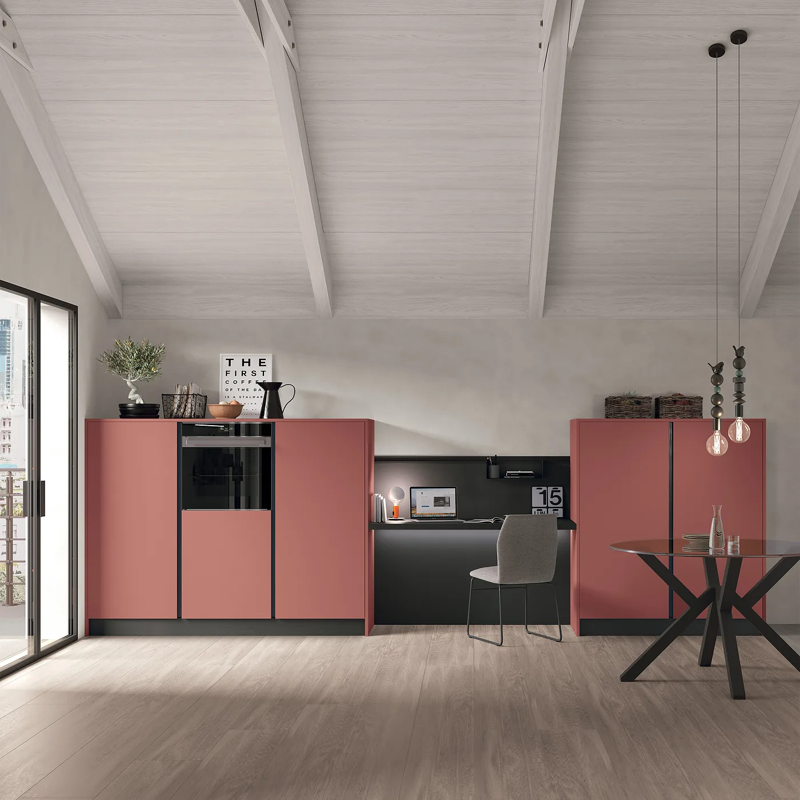
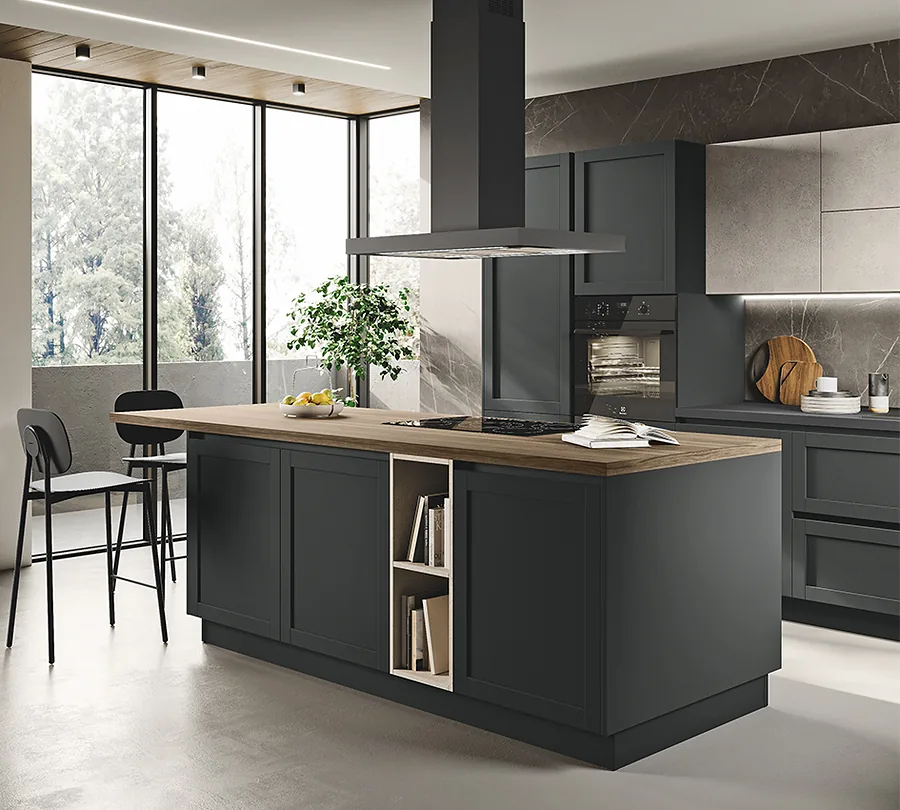
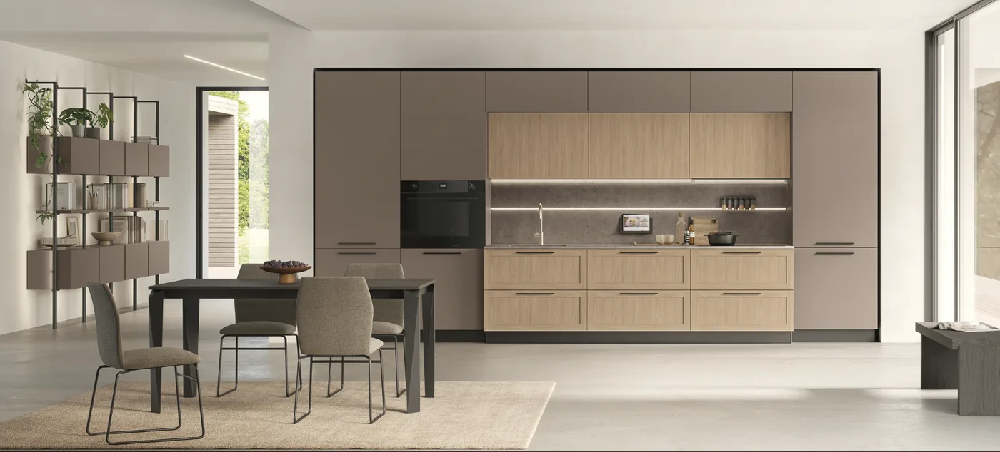

Cuisine italienne sur mesure
Cuisines italiennes
Conçues avec vous à partir des mesures de votre pièce, livrées et installées.
- Première visite, mesures et devis offerts
- Conçues et fabriquées en Italie
- Garantie cinq ans
La gamme Stosa
Quatre familles, 1 000 finitions.
-

Evolution
Natural, Metropolis, Aliant, Color Trend, Palio : bois, laque, Fenix® ou cadre aluminium.
-

Modern
Infinity, Karma, Young : lignes droites, poignée intégrée ou façades stratifiées.
-

Classic Glam
Beverly, Bolgheri, Dolcevita : façades à cadre, frêne, bois massif ou MDF laqué.
-

ART
Kaya, Sveva, Lumia : mélaminé, Alkorcell ou laque.

Sous les façades
Stosa, en chiffres.
-
18 mm
Les caissons
Panneaux de particules mélaminés sur les deux faces, classés E1 et conformes CARB P2 : très faible teneur en formaldéhyde.
-
18 à 25 mm
Les façades
Selon le modèle : 22 mm pour la plupart des modèles modernes, 24 à 25 mm pour Bolgheri, Beverly et Palio.
-
200 000
Les ouvertures
Charnières garanties 200 000 cycles, coulisses de tiroirs 60 000 ; portes à fermeture amortie de série.
-
1,2 à 6 cm
Les plans de travail
Stratifié, HPL, Fenix®, Neolith®, quartz, Dekton ou marbre.
-
ISO 9001
La qualité
Production certifiée ; origine italienne attestée selon la norme UNI 11674 ; bois FSC® sur certains modèles.
Données du fabricant (documentation Stosa 2024–2026).
Teintes et matières
Moderne ou classique.
Toutes les collections Stosa, sur commande. Du vert sauge au terracotta, du bois clair à l’anthracite : les façades se choisissent au magasin, échantillons en main.

Effet marbre et bois clair 
Vert sauge, façades à cadre 
Bleu profond et chêne 
Terracotta 
Anthracite mat, plan en bois 
Crème, façades à cadre



Cuisine et pièce de vie
La cuisine et la pièce de vie, pensées ensemble.
Nous proposons à la fois la cuisine et le mobilier : les teintes s’accordent d’une pièce à l’autre, et toute la maison se prépare au même endroit.
Salon, séjour, table et rangements sur mesure se choisissent dans des finitions assorties.
Voir le séjourVos questions
Avant de commencer.
Combien de temps faut-il prévoir ?
Environ huit semaines entre la commande signée (acompte versé) et la pose, selon le fabricant et la saison.
Puis-je voir une cuisine en vrai ?
Pas encore de cuisine exposée, mais tous les échantillons sont au magasin : façades, coloris, plans de travail.
Parlons de votre cuisine.
Décrivez votre projet en quelques lignes : nous convenons d’un rendez-vous pour prendre les mesures chez vous et concevoir la cuisine avec vous.
- Lundi
- 13h30 – 18h30
- Mardi au samedi
- 10h30 – 18h30
- Dimanche
- Fermé
- Téléphone
- 064 46 07 72
- Livraison
- Par nos soins, dans le Hainaut (Binche, La Louvière, Mons, Charleroi…) et la province de Namur
Ailleurs en Belgique, dont Bruxelles : sur demande.